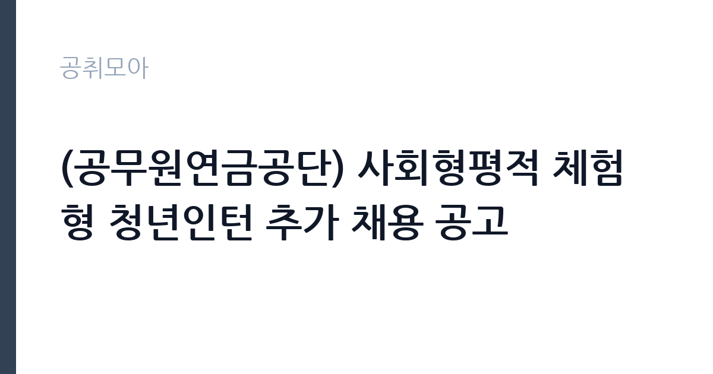

[공공기관] (공무원연금공단) 사회형평적 체험형 청년인턴 추가 채용 공고
공무원연금공단 · 서울 · 마감 2026-10-27 (D-14) · 출처 나라일터

한눈에 보는 모집 조건
| 기관 | 공무원연금공단 |
|---|---|
| 공고명 | (공무원연금공단) 사회형평적 체험형 청년인턴 추가 채용 공고 |
| 고용형태 | 청년인턴(체험형) |
| 근무지 | 서울 |
| 게시일 | 2026-10-13 |
| 마감일 | 2026-10-27 (D-14) |
지원자격, 이렇게 읽으세요
- 체험형 청년인턴 22명
- 접수 ~2026-10-27 마감
- 세부 조건은 원문 공고문 확인
공통 자격은 접수 마감일 기준 만 18세 이상 34세 이하이며, 제대군인과 사회복무요원은 복무기간에 따라 상한연령이 연장됩니다. 성별·학력·전공 제한이 없고, 임용예정일에 즉시 근무가 가능해야 합니다. 공단 청년인턴 근무 경험자는 제외됩니다. 전형별로는 장애인과 자립준비청년, 한부모가족 수급자, 기초생활수급자, 다문화가족 자녀를 대상으로 하며, 각 전형의 법령상 요건을 충족해야 합니다. 우대로 취업지원대상자와 중증장애인, 기초생활수급자에게 면접 가점이 적용됩니다.
이 공고의 포인트
첫 번째 포인트는 추가 채용이라는 점입니다. 전회차에서 인원을 채우지 못해 다시 문을 연 자리라, 요건을 갖춘 지원자에게는 경쟁 부담이 낮은 기회입니다. 두 번째로 근무지가 서울·부산·대구·광주전남·제주 등 전국에 분포해 거주지 근처에서 지원하실 수 있습니다. 세 번째로 공단은 체험형 인턴 수료자에게 이후 채용형 인턴·정규직 지원 시 서류전형 면제 같은 우대를 주는 제도를 운영해 왔습니다. 공공기관 행정 실무를 경험하면서 다음 채용을 준비하는 발판으로 삼으실 수 있습니다.
전형은 어떻게 진행되나
전형은 서류전형과 면접전형으로 진행되는 흐름이며, 세부 일정과 배점은 원문 공고문에서 확인하시기 바랍니다. 서류에서는 응시자격 적격 여부와 전형별 법령 요건 충족이 심사됩니다. 면접은 비대면 화상 방식으로 업무열의·고객지향·팀워크·윤리의식 같은 공통역량과 문제해결·소통·기획 같은 직무역량을 평가하는 구조입니다. 면접 만점의 60% 이상 득점자 중 고득점자 순으로 선발되므로, 기본 이상의 성실한 답변이 중요합니다.
원문에서 확인한 전형 방식
○ 모집분야 : 행정업무 ○ 선발직급 : 체험형 청년인턴 ○ 응시자격 [공통] - 응시원서 접수마감일 기준 만 18세 이상 34세 이하인 자(1991.10.28.~2008.10.27.生) - 제대군인 및 사회복무요원은 복무기간에 따라 상한연령 연장(1년 미만 : 1세, 2년 미만 : 2세, 2년 이상 : 3세) - 성별, 학력, 전공 제한 없음 - 채용예정일(’26.11.12.(목))에 즉시 근무 가능한 자 - 공무원연금공단 인사규정에 의한 임용결격 사유가 없는 자 - 공무원연금공단 청년인턴 근무 경험자 제외 [전형별] - (장애) 「장애인고용촉진 및 직업재활법」 제2조, 동법시행령 제3조, 제4조에 해당하는 장애인 - (자립준비청년) 「아동복지법」 제16조 및 제16조의3에 따라 보호조치가 종료되거나, 해당 시설에서 퇴소한 자 - (한부모가족) 「한부모가족지원법」 제5조에 해당하는 수급자 - (기초생활수급자) 「국민기초생활보장법」 제2조제2호에 해당하는 국민기초생활수급자 - (다문화가족의 자녀) 「다문화가족지원법」 제2조에 해당하는 다문화가족의 자녀 ○ 접수기간 및 절차 1. 채용공고 - 접수기간: 2026년10월13일 ~ 2026년10월27일 - 접수방법
이런 분께 추천해요
- 공공기관 행정 실무를 경험하고 싶은 만 34세 이하 청년
- 장애·자립준비·한부모·기초수급·다문화 등 사회형평 전형 해당자
- 공단 정규직·채용형 인턴 지원을 앞두고 직무 이해를 쌓고 싶은 준비생
지원 전 체크리스트
- 마감일 기준 연령(만 18세 이상 34세 이하) 충족 여부 확인
- 전형별 법령 요건(장애·자립준비·한부모·수급·다문화) 해당 여부 확인
- 11월 12일 임용예정일 즉시 근무 가능 여부 확인
- 과거 공단 청년인턴 근무 경험이 없는지 확인
모집 일정과 제출 타이밍
접수는 2026년 10월 13일부터 10월 27일 18시까지이며, 나라일터와 공단 채용 홈페이지를 통해 접수합니다. 이후 서류전형과 면접전형을 거쳐 11월 12일에 임용될 예정이며, 전형별 확정 일정은 원문에서 확인하시기 바랍니다. 증빙서류(연령·전형 자격 증명)의 발급에 시일이 걸릴 수 있으니 미리 준비하시기 바랍니다.
직무 이해하기: 공공기관
체험형 청년인턴은 공단 본사와 전국 지부의 행정업무를 지원합니다. 민원 응대와 문서 정리, 데이터 입력, 연금·복지 사업의 보조 실무가 중심입니다. 근무지는 서울을 비롯해 부산·대구·광주전남·제주 등에 분포하며, 배치된 부서의 지도 아래 정해진 계약기간 동안 근무합니다. 계약기간 만료 후 고용관계가 소멸되는 기간제 자리이므로, 정규직 전환을 전제로 두기보다는 실무 경험과 경력 자산으로 활용하시는 것이 좋습니다.
자기소개서 작성 팁
체험형 인턴 지원서에서는 공공기관 행정에 관심을 갖게 된 계기와 민원·행정 보조 경험(아르바이트·봉사·동아리 사무 등)을 연결하시기 바랍니다. 전형별 해당 사유는 증빙 중심으로 담백하게 기술하고, 직무와 무관한 장황한 사연은 줄이시기 바랍니다. 즉시 근무 가능성과 전일 근무 의지를 분명히 밝히시면 신뢰를 줄 수 있습니다.
면접 준비 포인트
면접은 비대면 화상으로 진행되는 흐름이므로, 카메라·마이크·접속 환경을 사전에 점검하시기 바랍니다. 공통역량 질문에는 민원인을 대하는 자세와 동료 협업 경험을 사례로 답하시기 바랍니다. 직무역량 질문에는 문서 작업의 정확성과 일정 관리 경험을 중심으로 준비하시기 바랍니다. 사회형평 전형의 취지를 이해하고 있다는 점을 보여주면 좋은 인상을 줄 수 있습니다.
급여·근무조건 읽는 법
보수는 원문 공고의 보수표에서 확인하시기 바랍니다. 참고로 공단의 과거 체험형 청년인턴 공고(공단 공지, 2023년 기준)에는 월 2,011,000원(세전)으로 안내된 바 있으며, 4대보험 가입과 월 1회 월차가 제공되었습니다. 다만 이번 추가 채용의 확정 보수는 원문에서 확인하시기 바랍니다. 기본급 외 수당 구성과 계약기간별 총보수는 근로계약서와 원문 공고를 대조하시기 바랍니다.
자주 묻는 질문
- 정규직으로 전환되나요?
체험형 청년인턴은 계약기간 만료 후 고용관계가 소멸되는 기간제 자리로, 정규직 전환을 전제로 하지 않습니다. 다만 수료자는 이후 공단 채용형 인턴 지원 시 서류전형 면제 우대를 받을 수 있어 다음 단계의 발판이 됩니다. - 근무지는 어디인가요?
서울·부산·대구·광주전남·제주 등 전국 지부에 배치되며, 지원 시 희망 근무지를 선택하는 방식입니다. 세부 배치 기준은 원문에서 확인하시기 바랍니다. - 면접은 어떻게 진행되나요?
공단 화상회의 시스템을 이용한 비대면 면접으로 진행되는 흐름이며, 공통역량과 직무역량을 평가합니다. 세부 일정과 접속 방법은 서류 합격 안내에서 확인하시기 바랍니다.
함께 보면 좋은 공고
[공공기관] [직원채용] 무기계약직 연구기술직(방사선융복합연구팀) 공개 채용(재공고) — 마감 2026-10-27[공공기관] 단시간제(편의시설 점원) 채용공고 — 마감 2026-10-20[공공기관] [김해보훈요양원] 2026년 6차 요양보호직 채용공고 — 마감 2026-10-28출처: 나라일터 공개정보를 바탕으로 공취모아가 정리한 안내글입니다. 모집 조건·일정은 변경될 수 있으니 지원 전 반드시 원문 공고문을 확인하세요. 본 글은 정보 제공용이며 합격을 보장하지 않습니다.